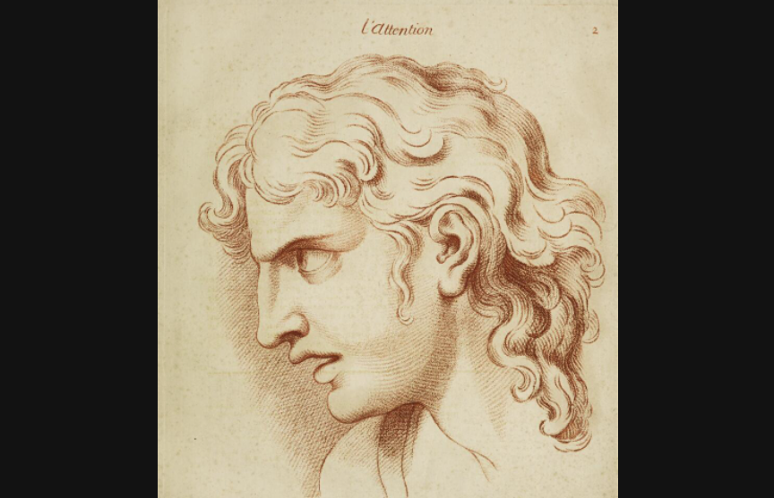

Humans have long sought tranquillity by withdrawing from life’s distractions to experience gentler states of mind. Tranquillity relates to many other feelings, including contentment, serenity, peace and balance.
Two newly commissioned installations explore contrasting experiences of tranquillity. Jasleen Kaur invites you to relax in a yoga studio while reflecting on themes of cultural appropriation in the self-care industry. Chrystel Lebas’s multisensory installation features some of the oldest forests in the world, translating the awe of being in these ancient landscapes. Both projects ask us to think deeply about our own wellbeing and our interdependence on other beings.
At the centre of ‘Tranquillity’ is a room of contemporary artworks and historic artefacts that reveal different approaches to regulating the body and balancing the mind. From seeking solitude to being outside, employing prayer or self-reflection, we contemplate some of the spaces and rituals that can help us navigate fluctuating feelings and cope with uncertainty. Situated throughout the gallery are contributions from artists, religious leaders, historians, psychiatrists and neuroscientists, which consider the impact on our health of feeling calm.
“For most of Western history, strong feelings of joy and sorrow, desire or hatred, hope and despair were thought of as passions of ‘the soul’. The powerful passions were distinguished from milder affections and sentiments, including familial love and compassion. Our modern category of ‘the emotions’ is a much more recent invention. So, how did we get from passions to emotions, and what difference has it made?”
Thomas Dixon, Professor of History, Queen Mary University of London
Charles Le Brun
Heads. Representing the various passions of the soul; as they are expressed in the human countenance / [Charles Le Brun].
This engraving is a reproduction from painter Charles Le Brun’s drawings of the passions, which he presented at a lecture in 1688, later published and widely distributed among artists around Europe. Le Brun believed that the passions of the soul each produced a different facial expression.
These were used to create a visual dictionary for artists to copy from. This page depicts the idealised state of “joy with tranquillity”. This was a polite and serene expression, with the sweetness of joy shown in a composed expression, which was morally preferable to raucous laughter.
We are standing in front of a large book of prints. It includes black-and-white illustrations of the facial expressions drawn by the French painter Charles Le Brun.
The illustrations capture different “passions” of the soul. They were first created by Le Brun in 1668. He believed that the human soul showed its “passions” in the movements of the face, and he created a visual classification system to support his idea. This went on to be influential for many centuries.
On this open page, there is an image of a woman with a serene expression on her face. The title below describes it as a depiction of “Joy with Tranquillity”.
Underneath the image, a short caption reads: “Very little alteration is remarked in the face of those that feel within themselves the sweetness of joy.”
This suggests that the lack of any stronger expression was regarded positively. Le Brun’s work went on to declare that it was possible to judge the moral character of a person based on the way they expressed their passions.
Le Brun was, like many other 17th-century thinkers of the time, interested in rationalising, ordering and explaining the world around him. By giving names and definitions to subjective human experiences, they set in motion the deeply rooted concept of human expression as universal, and position these expressions within a hierarchy of good and bad, a system which we are still grappling with to this day.
Jasleen Kaur
Millions of people participate in yoga classes globally, seeking to centre themselves with this physical and meditative exercise. Yoga has been practised for thousands of years in what today is known as the Middle East and South Asia, but it is now largely divorced from its philosophical origins.
Interest in yoga in Europe and the US started in the early 20th century, as fitness regimes grew in popularity. These projected films from the 1950s show bodies performing poses, moving in strange, synchronised harmony and then stopping abruptly. The Yogi Swami Dev Murti, who appears here, travelled the world performing and teaching yoga to predominantly white audiences.
The wellness industry is a multibillion-dollar economy. This oversized palo santo wood sculpture – burned as incense for its stress-relieving and cleansing properties – references the rapid deforestation in parts of South America. The large crystal lamp represents the unethical mining of natural crystals, fuelled by increasing consumer demand for these indigenous resources-turned-wellness products. Kaur brings our attention to social injustice within these exotifying practices. She asks us to consider who is exploited by acts of careless self-care.
Here inside my installation, it looks and sounds like a strange yoga studio or wellness retreat, where things do not appear as expected. See-through curtains enclose and soften the space, and have vintage films of people practising yoga projected onto them.
Some of the films have been hand-tinted with colour and sepia tones. These projected bodies move in strange choreographies, sometimes are synchronised, and sometimes stop abruptly and switch to another surface or disappear, to be replaced with a colour: red, yellow, brown. The colours are linked to chromotherapy, the practice of using colour to balance the body and heal it from ailments.
There is a black-and-white film of the yogi Swami Dev Murti. He occupies his own space in the periphery of the room, and the intensity of his movements are sometimes beautiful and at other points disturbing.
He is the only person of colour. In all the other films the people are white. Words that you might hear in a yoga class such as: “bring your attention to” and “breathe”, are edited in with others such as “fetishisation”, “saffronisation”, “commercialisation”, around the frame of the film, disrupting the images and making reference to the colonial gaze inherent in the footage.
This suggests that the lack of any stronger expression was regarded positively. Le Brun’s work went on to declare that it was possible to judge the moral character of a person based on the way they expressed their passions.
Unavoidably large sculptures of commercially branded wellness products sit in the space. They are faux versions of the real deal, adding to the sticky questions of authenticity. In the centre of the room is an oversized glowing crystal lamp. The lamp would be normally something you would see at a much smaller scale. Here it is scaled up to the size of a person, ridiculous but also seductive at the same time.
When objects or practices are removed from bodies of colour, they become palatable and desirable. One of the gallery walls is wallpapered with a large image of Trayambakeshwar Temple in Rishikesh, India, which is now a popular yoga destination due to the site’s historically spiritual significance. It is a photograph that thousands of people have taken on yoga retreats that now circulates under hashtags on the internet. I have used a copy purchased from a stock-image website, suggesting a superficial and capitalist relationship to the location.
The installation is furnished with benches made from marbled yoga mats and foam blocks. You are invited to sit on the benches and get comfortable, listen to the soothing soundtrack and reflect. I want to draw your attention to who really enables these spaces of wellbeing? Whose labour is invisible? Whose histories are erased? And what does it mean to practise so-called self-care at the expense of others?
What are the routines people have developed to manage their own wellbeing through the ages? This gallery unites historic and contemporary objects from several cultures that illustrate the search for tranquillity. From looking within to focusing attention outwards beyond the self, these objects address themes of spirituality, flow and reflection.
Diary writing can help us to process our thoughts, and going for a walk in nature can stimulate greater connection to the world around us. Some people turn to their faith in their journey for internal peace. Such approaches can offer a break from anxiety and restlessness, and provide moments for recovery.
In the ancient practice of humoral medicine, the body was composed of four humours that corresponded to the four elements of the universe. It was believed these humours had to be kept in balance with the cosmos in order to stay healthy. While our understanding of healthcare has changed over the centuries, the connections between our body and our surroundings still resonate powerfully today.
Unknown maker and date
Unknown maker and date
This colourful print from Sri Lanka shows a scene from the Buddha’s life on the path to enlightenment. It is mythologised as a great battle with Māra, the evil demon that tries to stop him with an army of monsters. The Buddha’s calmness and connection to the earth are in direct opposition to an explosion of movement and objects that attack him. According to Buddhist theology, Māra’s battle represents the struggle we each face daily to see things how they really are, not confined by fear, distraction and our own ego.
Aldobrandino da Siena, 1390
Edition: D Appleton and Co., New York, 1873
This medieval manuscript was made for a noble French family, and it was passed down and annotated by several generations of women. The book contains advice on how to achieve equilibrium by regulating the ‘non-naturals’ – things such as sleep, exercise and food. The passions of the soul were included among the non-naturals, and too much of one particular passion was believed to lead to ill health.
Unknown maker, c. 19th century
Unknown maker, c. 19th century
In the religious tradition of Taoism, everything is a balance of opposites. The yin and yang symbol represents contrary forces that complement each other. Love is impossible without anger, and pain and happiness are intertwined. These interactions are celebrated and seen as complementary rather than at odds with each other. Practitioners of traditional Chinese medicine regard the body as made up of yin and yang. To heal disease and prolong life, these elements need to be kept in a harmonious balance.
Unknown maker and date
Unknown maker and date
This is a German illustration depicting a nun finding heavenly grace in solitude. The text states: “Far from all the turbulence of the world is my joy, my happiness and on earth the heaven for me.” Christianity, like many other faiths, often promotes retreat as a way of concentrating and better connecting with God.
Sara Haq (@monkeytreepro), 2014–17
Courtesy of the artist
Over the course of three years, the artist Sara Haq kept a gratitude journal on Instagram called #1000happydays. By focusing on joyful moments, the journal helped her process challenging experiences. Excessive social media use has been proven to increase feelings of anxiety by promoting a desire for constant approval. Here, however, Haq harnesses Instagram’s journaling and connective potential, using it as a tool to treasure small details of everyday pleasure.
To scroll through the images from left to right, wave over the motion sensor.
Octavia E Butler, 1975–96. Illustrations 2021.
The Huntington Library © Octavia E Butler. Reprinted by permission of Writers House LLC acting as agent for the Estate.
Octavia Butler’s writing addresses disability, race and gender rights. Her novels are often set in imagined near futures where characters from marginalised communities flourish despite their difficult circumstances. Butler experienced many years of poverty herself, only enjoying literary success later in her career.
As part of a personal motivational routine, she regularly wrote statements of self-encouragement. These notes reveal her ambitions of connecting emotionally with her readers, becoming a bestselling author, and becoming financially secure so she could support other writers of colour.
In this case there are two note pages that the American writer Octavia E Butler wrote to herself. They give some insight into the feelings, aspirations and struggles she had within her career and personal life.
They were handwritten by Butler with different-colour pens, on different-sized paper. Certain words and sentences have been highlighted in contrasting colours and they jump from the page.
One page taken from a spiral notebook – she wrote in the late Seventies - is full of statements of self-encouragement.
She starts with “I shall be a bestselling writer” and goes on to mention which newspapers she wants to be on bestselling lists of. Further down the page she lists the things that she would like to do with the money from her books. She writes:
“I will help poor black youngsters to go to college” and “I will get the best healthcare for my mother and myself”.
The closing sentences are a sort of mantra that’s repeated and underlined throughout the text: “So be it! See to it!” Writing these motivational and affirming notes were part of a lifelong practice she had, willing something from thinking into being.
In 2020, 14 years after her death, she reached the New York Times bestseller list for her book ‘Parable of the Sower’.
The second note in this case is more succinct. It sets out her overarching goal as a writer; it is a written in green, blue and red pen:
“Tell stories filled with facts. Make people touch and taste and know. Make people feel! Feel! Feel!”
Celia Pym, 2015
Courtesy of the artist
Celia Pym is interested in memories held in our clothing. She repairs worn-out garments for a living, and sees a link between the therapeutic practical care of mending and her previous training as a nurse. She made this piece on a residency in the Dissecting Room at King’s College London. Here Pym darned socks to practise stitching, while medical students studied anatomy around her. These socks are intentionally cut, anticipating areas where they are likely to become worn through – carrying out preventative care. Using bright and contrasting coloured thread, she makes the mends visible, drawing attention to the damage and the process of coming to terms with it.
Unknown maker, 1415–20
This is an English folding almanac written in Latin. Almanacs such as these were designed to be carried by a physician on their belt and consulted to diagnose ill-health. In the middle ages, it was believed that human health was closely aligned to the cosmos, and this almanac contains astrological illustrations and celestial calendars.
These diagrams show dates of solar and lunar eclipses and would have been used to help identify appropriate times to treat specific illnesses.
We’re looking at one of the rarest and most precious objects in the Wellcome’s collection. It’s a folding almanac from the 15th century.
It was designed to be a portable object that would have been attached to a medical practitioner’s belt and carried around to help them diagnose patients. This almanac’s condition and exquisite detail show that it was a highly valuable object and was, possibly, never even used.
When closed, the rectangular almanac fits in the palm of your hand. It is covered in an embroidered binding made of green-and-pink silk. When opened, it unfolds like a map and shows astrological tables with lunar and solar eclipses, and diagrams.
On the unfolded page small circular diagrams show the lunar and solar eclipses dating between 1384 and 1462. They have been written in brown and gold and red ink, and at the centre of each one the sun or moon’s phases have been illustrated. On the other side of this page is an illustration of the zodiac man.
In the medieval period the cosmos played an important role in the understanding of human health. Astrology and medicine were taught in parallel in universities. Medical treatment often began with enquiries about exactly when the patient fell ill, at what time in relation to the lunar or solar cycles. An almanac such as this would have helped a practitioner prescribe the best treatment for a patient.
At this time the body was believed to be composed of four humours that corresponded to the four elements of the universe. It was believed these humours had to be kept in balance with the cosmos in order to stay mentally and physically healthy.
While our understanding of healthcare has changed over the centuries, the connections between our body and our surroundings still resonate powerfully today.
Ben Gilbert, 2014
1 min 43 secs
The object can be seen at the end of the short film. Wave over the motion sensor to activate.
After W R Blake, 1857
Plate to: US Pacific Railroad Surveys, California, Geological Report, Washington

In this illustration a giant redwood tree towers above a small figure, symbolising its majesty. This particular species can grow over 100 metres and live for thousands of years. In response to mass felling of redwoods in the 19th century, there was public outcry. This galvanised support for the American conservation movement to demand the protection of forest land, which ultimately led to the establishment of national parks.
Toby Glanville, 2006–7
Printed 2021. Courtesy of the artist
Just before the Olympic development of east London, Toby Glanville documented a local allotment before it was relocated. He captures the diverse intergenerational community as they tend to their plots of land, growing vegetables and enjoying family meals. Glanville’s photographs, for the ‘Moro East’ cookbook, poignantly capture the restorative benefits of gardening and gaining a greater connection with the earth, even in the middle of a busy urban environment.
Chrystel Lebas, 2021
For centuries, people have made pilgrimages to places of natural wonder to restore the spirit.
In 2019 Chrystel Lebas travelled to the Hoh Rain Forest in Washington State, USA, in search of a place free of human noise called “one square inch of silence”, and then on to the Japanese island of Yakushima, known for its Yakusugi or cedar trees. These two temperate rainforests contain some of the oldest living trees in the world.
Using a large-format analogue camera, Lebas takes photographs with a long exposure to capture a rich spectrum of blues and greens in the last moments of daylight. These monumental photographs are accompanied by a soundscape composed with the noises of birds, monkeys, wind and rivers recorded on location. The installation is complemented with a scent of petrichor that evokes the smell of the forest floor after it has rained.
Researchers at the Nippon Medical School in Tokyo first publicised their research into the health benefits of shinrin-yoku or ‘forest bathing’ in the 1980s. These studies suggest that the multisensory experience of being in nature calms the stress response of the nervous system.
Translating the sublime power of these ancient forests to the gallery, Lebas’s installation creates a sense of awe, and reminds us of our reliance on the natural world.
The installation contains sound, scent and low lighting levels.
In this room you will walk through a series of monumental colour photographs of ancient forests in Japan and America. I travelled to the Hoh Rain Forest in Washington State, USA, in search of a place free of human noise called “one square inch of silence”, and then on to the Japanese island of Yakushima, known for its ‘Yakusugi’ or cedar trees. These two primaeval temperate rainforests contain some of the oldest living trees in the world.
I took these photographs with a panoramic medium-format analogue camera. The large format expands the field of vision and the analogue process allowed me to slow down the act of looking. The photographs were taken at twilight with long exposures, which helps me to capture great detail and gives the photographs the intense vivid greens and browns, and multiple focal points in tiny details. The large colour prints are unglazed, so they envelop you and draw you right into the forest.
HThe framed photographs are displayed on bespoke walls covered in fabric that are placed at angles throughout the gallery, prompting you to walk into the forest. At the end of the walk there are a series of large photographs that I called monuments, representing images of singular trees. Each tree is photographed in three large parts from top to bottom, and they are stacked together to reconstruct the entire tree so that these monuments translate the feeling of being dominated by the ancient trees.
As you enter the installation you can hear a soundscape composed with sounds I recorded on location in these forests, including different types of bird species chirping and singing, Macaques’ chattering and Yaku deers calling each other, with water sounds such as rain and babbling streams encountered in the rainforest. You might also smell the scent of petrichor that evokes wet soil after the rain. I wanted to create a tranquil environment that translates my experience of being alone in these awe-inspiring landscapes to the gallery.
Please sit down on the comfortable seating positioned throughout the gallery so that you can spend time in this calming environment.

First floor

First floor